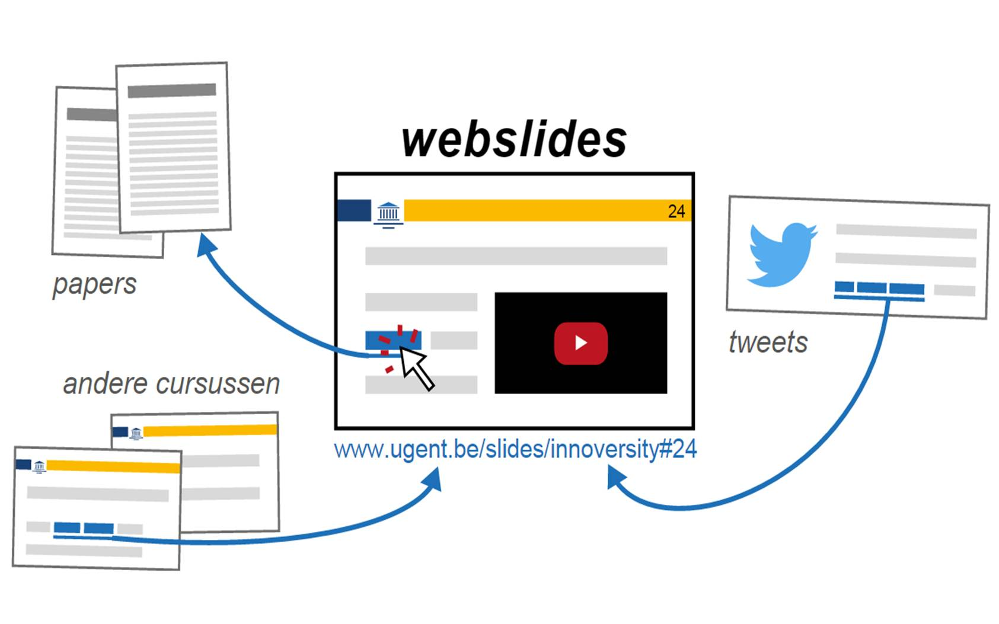

Het onderwijs van de toekomst is open en web-gebaseerd.
Betere slides voor studenten, feedback voor lesgevers en erkenning voor UGent expertise – het kan met open webslides. Dat zijn online slides met alle mogelijkheden van het web zoals filmpjes, tweets en interactieve grafieken, die je kan openen op pc, tablet én smartphone.
Via een open-source platform vullen studenten webslides aan en delen updates met medestudenten. Populaire aanpassingen vinden snel hun weg naar de docent die deze in één klik kan valideren. Docenten kunnen webslides delen op sociale media en zo de conversatie buiten de UGent verspreiden. Toekomstmuziek? Zeker niet, onze UGent-pioniers starten dit jaar met open webslides en wij brengen hen samen in één kennisnetwerk.
Leer alles over open webslides, één van de vier winnende ideeën voor de UGent Innoversity Challenge.